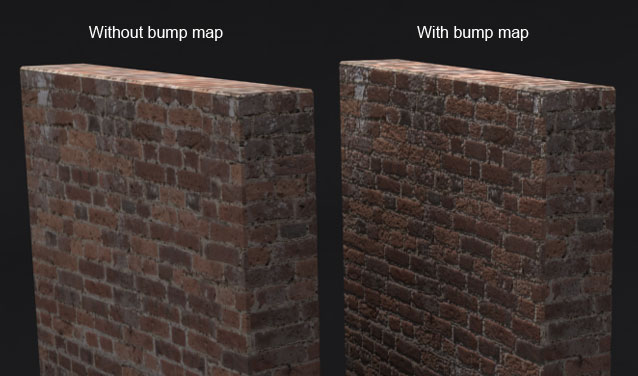

Bump Mapping
Bump mapping is a technique to simulate bumps and wrinkles on the surface of an object. This simulation is achieved by perturbing the surface normals of the object and using the perturbed normal during lighting calculations.
Displacement Mapping

Displacement mapping is an alternative computer graphics technique in which it uses a (procedural-) texture- or height map to cause an effect where the actual geometric position of points over the textured surface are displaced. It gives surfaces a great sense of depth and detail, permitting self-occlusion, self-shadowing and silhouettes.
Relief Mapping
Relief Mapping is a texture mapping technique that can produce accurate depictions of self-occlusion,self-shadowing, and parallax.
Normal Mapping
Normal mapping is an implementation of bump mapping. It is a technique that is used to add details without making the surface of an object more complex. It is commonly used to enhance the appearance and details of a low polygon model by generating a normal map from a high polygon model.